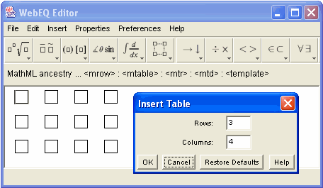

From the standard toolbar, you can insert table templates in four common sizes. Using the Insert Table option from the Insert Menu, you can insert a template for a table of any size. Selecting this option opens a dialog bog prompting you for the number of rows and columns.

Once you fill in the dimensions and click "OK" and the appropriate table template will be inserted in the editor window.